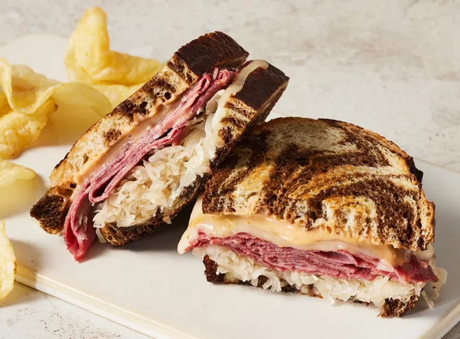
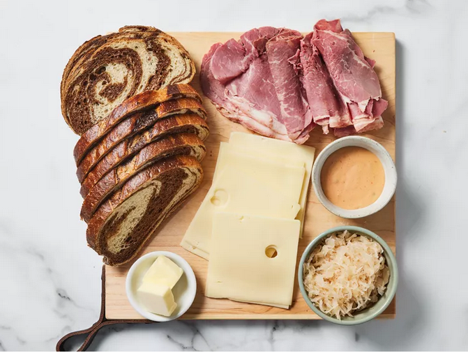
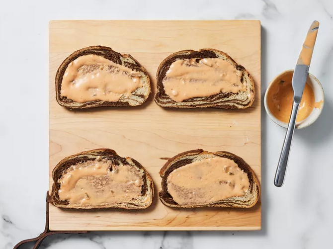
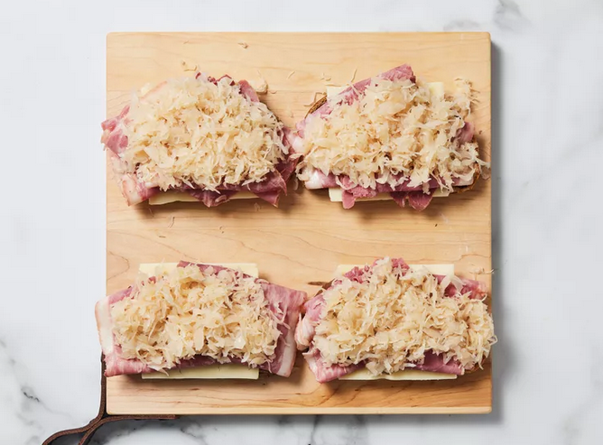
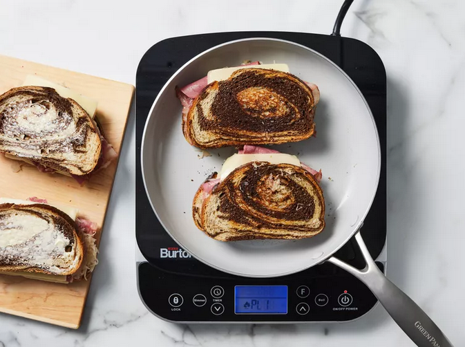

Reuben Sandwich

Description
A Reuben is a grilled sandwich featuring corned beef on rye bread. The Reuben is a menu staple in
Jewish-style delicatessens, but it's not technically kosher because it combines meat and cheese.
This sandwich is known for its rich, savory flavor. They are really delicious and easy to make
and can be served with big bowls of steaming vegetable soup and dill pickles on the side.
Ingrediens
- 1/2 cup Thousand island dressing
- 8 slices rye bread
- 8 slices dile sliced corned beef
- 8 slices Swiss cheese
- 1 cup sauerkraut, drained
- 2 tablespoons butter, softened
Steps
- Gather all ingredients and preheat a large griddle or skillet over medium heat.

- Spread one side of bread slices evenly with Thousand Island dressing.

- On four bread slices, layer one slice Swiss cheese, 2 slices corned beef, 1/4 cup sauerkraut, and a second
slice of Swiss cheese.
Top with remaining bread slices, dressing-side down. Butter the top of each sandwich.

- Place sandwiches, butter-side down on the preheated griddle; butter the top of each sandwich with remaining
butter. Grill until both sides are golden brown, about 5 minutes per side.

- Serve hot. Enjoy!